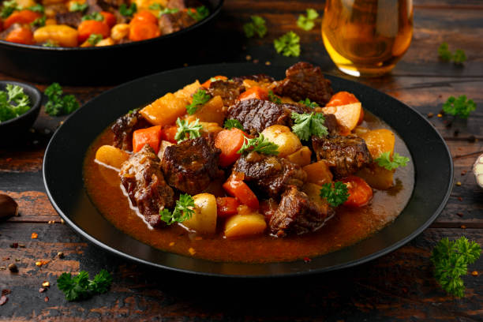

Beef Stew

Beef, Carrot, and Potato Stew
Beef Stew is a classic dinner and meal that is believed to have originated in the 18 century. This meal was not only made at the time for its simplicity, but for its flavorful and mouth watering taste as well. Even among other dishes Beef Stew has remained a staple dinner for many households in America since its a easy to make meal that feeds many while keeping the cost low.
While the "main" recipe for Beef Stew may only be beef, carrots, and potatoes. Many will include onion, peas, mushrooms, and even celery to add a personal touch or a flavor that person enjoys. The recipe below is what I personly enjoy in my Beef Stew.
Ingredients
- Beef
- Carrots
- Potatoes
- Onion
- Peas
- Beef broth
Recipe
- Preheat oven:Preheat oven to 375f
- Prepare Beef:While the oven is heating get your beef chopped and floured
- Slicing: Skin your carrots and potatoes, after you want to chop the carrots into small disks and the potatoes into small chunks
- Mixing: Now combine your beef, carrots, potatoes, and peas in a pot with some water and beef broth
- Cooking:After mixing your ingredients together place in the oven for about an hour and a half. Letting the Beef stew simmer for the last 30 minutes.
- Resting:After taking it out of the oven the Beef stew will continue to cook for several minutes. I suggest you let it rest for 5-10 minutes before you start eating.
- Enjoy: Now you should have a wonderful mouth watering Beef stew yourself.
Note:If your Beef stew is watered down, add more flour. If its too lumpy and solid, add more water or beef broth.